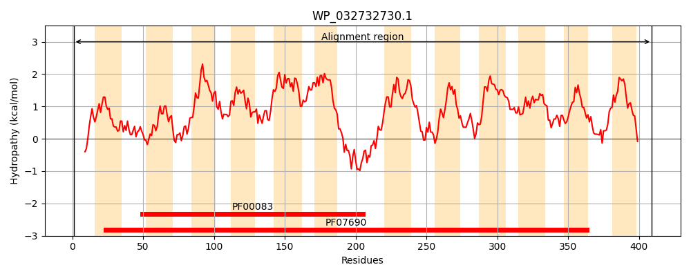
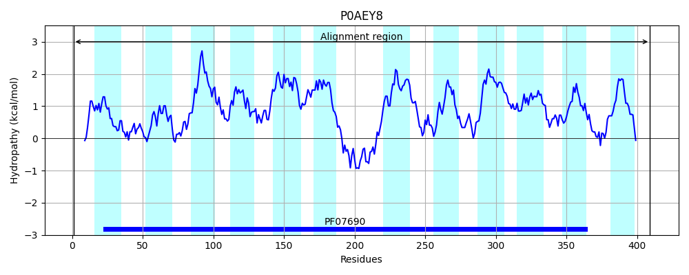
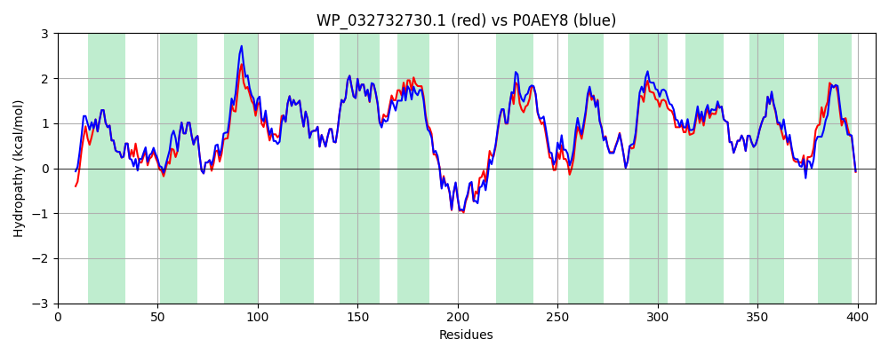

Hit Accession: P0AEY8
Hit TCID: 2.A.1.2.19
Hit Description: gnl|BL_ORD_ID|8801 gnl|TC-DB|P0AEY8|2.A.1.2.19 Multidrug translocase mdfA - Escherichia coli.
Mach Len: 409
e:0.000000
Query TMS Count : 12
Hit TMS Count: 12
TMS-Overlap Score: 11.450000
Predicted Substrates:CHEBI:3020;benzalkonium chloride, CHEBI:383703;3,6-diamino-10-methylacridinium chloride, CHEBI:4883;ethidium bromide, CHEBI:9502;tetraphenylphosphonium, CHEBI:3717;ciprofloxacin, CHEBI:7629;norfloxacin, CHEBI:9731;trimethoprim, CHEBI:3603;chloramphenicol, CHEBI:32215;thiamphenicol, CHEBI:2496;doxorubicin, CHEBI:9474;tetracycline, CHEBI:61448;isopropyl beta-D-thiogalactopyranoside, CHEBI:10379;beta-D-Gal-(1->3)-beta-D-GlcNAc-(1->3)-beta-D-Gal-(1->4)-D-Glc
BLAST Alignment:
Score: 1840 , Bit scores: 713 bits, E-value: 0.0e+00, Alignment length: 409, Percentage identity: 88
Query: 1 MQNYSLSGRRLGRQALLFPLCLVLYEFSTYIGNDMIQPGMLAVVQEFQVGNEWVPTSMTAYLAGGMFLQWLLGPLSDRIGRRPVMLTGVVWFIVTCLATLLAQTIEQFTLLRFLQGISLCFIGAVGYAAIQESFEEAVCIKITALMANVALIAPLLGPLVGAAWVHVLPWEMMFVLFAVLAGISFVGLQRAMPETATRLGEKLSVKELGRDYRLVLKNLRFVAGALATGFVSLPLLAWIAQSPVIIISGEQATSYEYGMLQVPIFGALIAGNLVLARLTSRRTVRSLIIMGGWPIMFGLILSAAATVVSSHAYLWMTAGLSFYAFGIGLANAGLVRLTLFASEMSKGTVSAAMGMLQMLIFTVGIELSKHAYELGGNGLFSLFNLLGGVLWLGLMIYFLKDKSVGNSQQ 409
MQN SG RLGRQALLFPLCLVLYEFSTYIGNDMIQPGMLAVV+++Q G +WVPTSMTAYLAGGMFLQWLLGPLSDRIGRRPVML GVVWFIVTCLA LLAQ IEQFTLLRFLQGISLCFIGAVGYAAIQESFEEAVCIKITALMANVALIAPLLGPLVGAAW+HVLPWE MFVLFA LA ISF GLQRAMPETATR+GEKLS+KELGRDY+LVLKN RFVAGALA GFVSLPLLAWIAQSP+III+GEQ +SYEYG+LQVPIFGALIAGNL+LARLTSRRTVRSLIIMGGWPIM GL+++AAATV+SSHAYLWMTAGLS YAFGIGLANAGLVRLTLFAS+MSKGTVSAAMGMLQMLIFTVGIE+SKHA+ GGNGLF+LFNL+ G+LWL LM+ FLKDK +GNS +
Sbjct: 1 MQNKLASGARLGRQALLFPLCLVLYEFSTYIGNDMIQPGMLAVVEQYQAGIDWVPTSMTAYLAGGMFLQWLLGPLSDRIGRRPVMLAGVVWFIVTCLAILLAQNIEQFTLLRFLQGISLCFIGAVGYAAIQESFEEAVCIKITALMANVALIAPLLGPLVGAAWIHVLPWEGMFVLFAALAAISFFGLQRAMPETATRIGEKLSLKELGRDYKLVLKNGRFVAGALALGFVSLPLLAWIAQSPIIIITGEQLSSYEYGLLQVPIFGALIAGNLLLARLTSRRTVRSLIIMGGWPIMIGLLVAAAATVISSHAYLWMTAGLSIYAFGIGLANAGLVRLTLFASDMSKGTVSAAMGMLQMLIFTVGIEISKHAWLNGGNGLFNLFNLVNGILWLSLMVIFLKDKQMGNSHE 409 | Protein Hydropathy Plots: |
|---|
|  |  |
Pairwise Alignment-Hydropathy Plot:
|
|---|
|  |